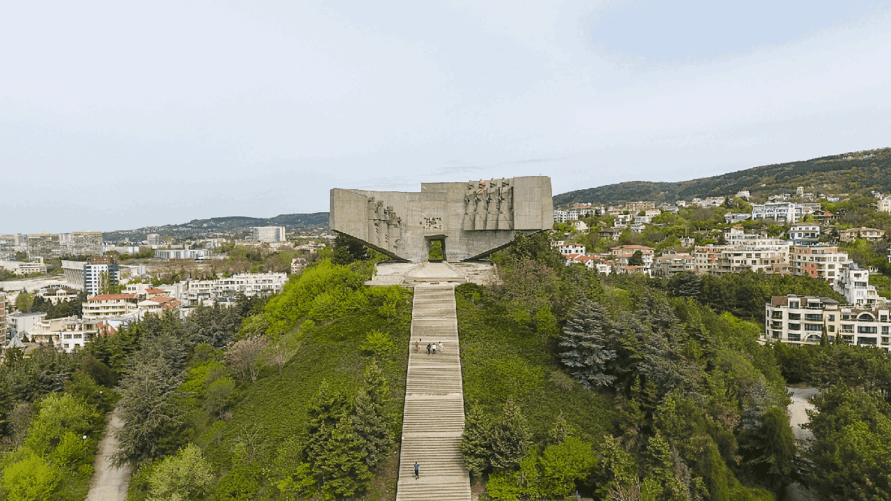

Красиви панорамни гледки във Варна

Падналия ресторант и панорамната площадка - Галата
Построен през 1968 г., панорамният ресторант "Галатея", кръстен по името на морската нимфа Галатея, в която бил влюбен циклопът Полифем (еднооко чудовище), според древногръцката митология, имал около 30 години живот.
През пролетта на 1997 г. долната тераса на панорамния ресторант пада в морето, а няколко месеца по-късно - през февруари 1998 г., заедно с горната тераса на ресторанта, в морето започва да се свлича и фара. В резултат на това ресторантът е изоставен и започва проект за изграждането на нов фар.

През 2015г. по пътя към ресторанта е открита и панорамна площадка, от която се разкрива прекрасна панорама на целия Варненски залив. Разполага с няколко далекогледа, които позволяват да се докоснете и до най-скритите кътчета на града. На запад се виждат се комините на ТЕЦ Варна и бреговете на Белославското езеро, а на североизток при хубаво време изплува нос Калиакра. Истинската награда обаче е гледката право напред - целият град на длан!
Днес ресторантът и панорамната площадка са примамливо място за влюбени двойки и любители на скрити кътчета за бягство от големия град.
Местоположение на падналия ресторант:
Местоположение на панорамна площадка Галата:

Телевизионна кула - Варна
През 1959 г. за първи път в България в София е излъчено редовно телевизионно предаване. Интересът към тези предавания бързо нараства, но поради своята специфика приемането на сигнала в цялата страна е невъзможно. Скоро се приема решение за изграждане на мрежа от 12 приемно-предавателни станции - в края на 1965 г. е пуснат ретранслаторът на връх Ботев, през ноември 1967 г. този на Слънчев бряг и т.н. Част от тази мрежа е и варненският РРТ, построен на Франгенското плато, северно от град Варна.

Районът около Телевизионната кула е любимо място за разходки сред природата и планинско колоездене заради чистия въздух и множеството леки и екстремни горски пътеки. От най-високата точка на местността, разположена точно до кулата, се разкрива великолепна гледка към града. Виждат се Паметникът на българо-съветската дружба, Морска гара, Варненското езеро, Галата… Ако имате късмет, при хубаво време може да видите дори нос Емине и крайните ръкави на Стара планина!
А на около 20 метра от там се намира друго скрито бижу на Телевизионната кула - изоставеният бункер, който предлага изумителна, близо 180-градусова панорама от нос Галата до заливчето на Евксиноград. И всичко това, само на около час и половина път пеша от града!
Местоположение:

Парк-паметникът на българо-съветската дружба
Парк-паметникът на българо-съветската дружба е най-големия във Варна и региона. Разположен е на на 110 метра надморска височина, на върха на могилата Турна тепе. Преди построяването на паметника, на Турна тепе се е намирала Братската могила на борците против фашизма и капитализма, като костите им били преместени още на 7 септември 1958 г. в Пантеона в Морската градина.
В подножието на хълма на паметника се намират най-големите знамена в Европа. Българско и европейско знаме. Флаговете са на внушителни конструкции с височина 52,6 метра.
Днес паметникът не се поддържа, но това не спира много младежи и търсачи на близки усещания. Мемориалът отвътре е кух, което позволява на смелчаците да се качат до самия връх, откъдето се разкрива гледка към морето.
Местоположение:
Гледка до Аксаковската панорама

Няма нужда да посетите ресторанта “Аксаковска панорама”, за да видите прекрасната гледка. Има едно място много наблизо, от другата страна на пътя, точно пред Метеорологичния радар. Имайте предвид, че не се препоръчва дълъг престой на това място, тъй като има микровълново лъчение. Но определено можете да поспрете за бърза снимка на тази романтична варненска гледка!